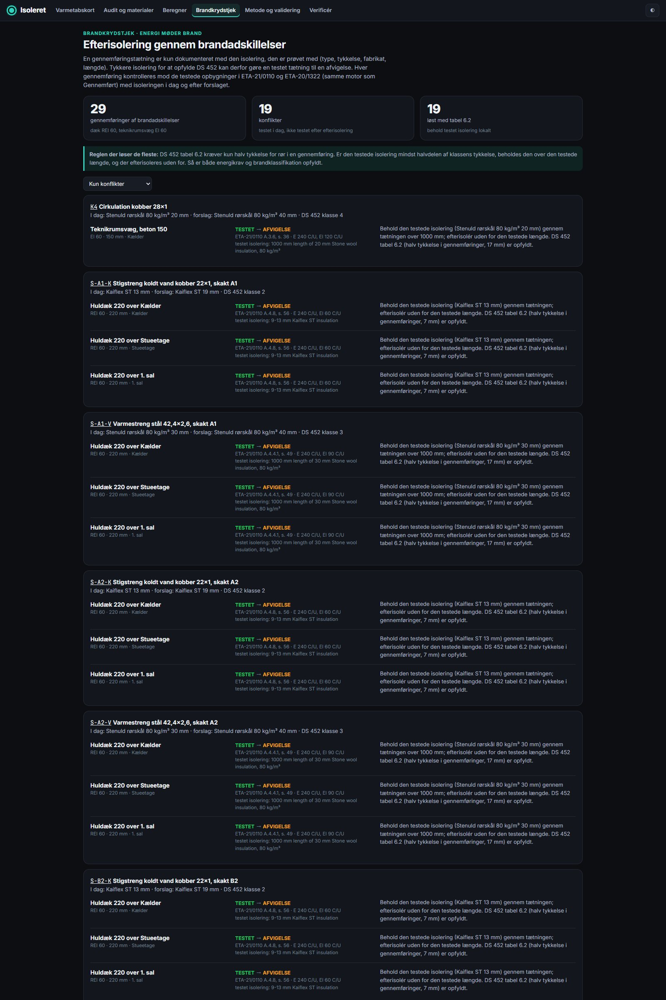
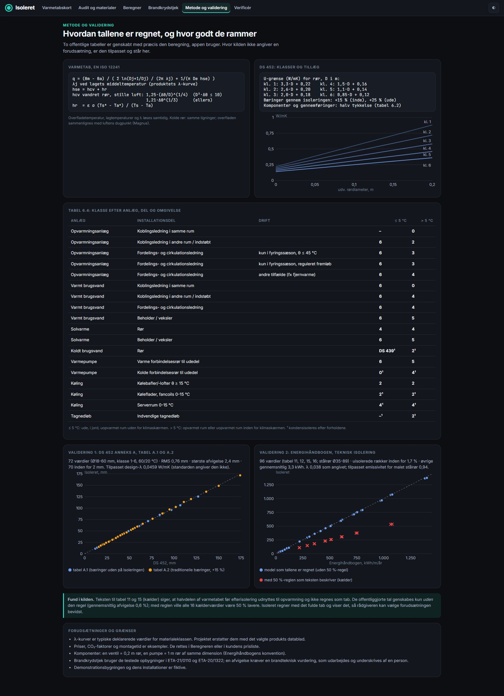
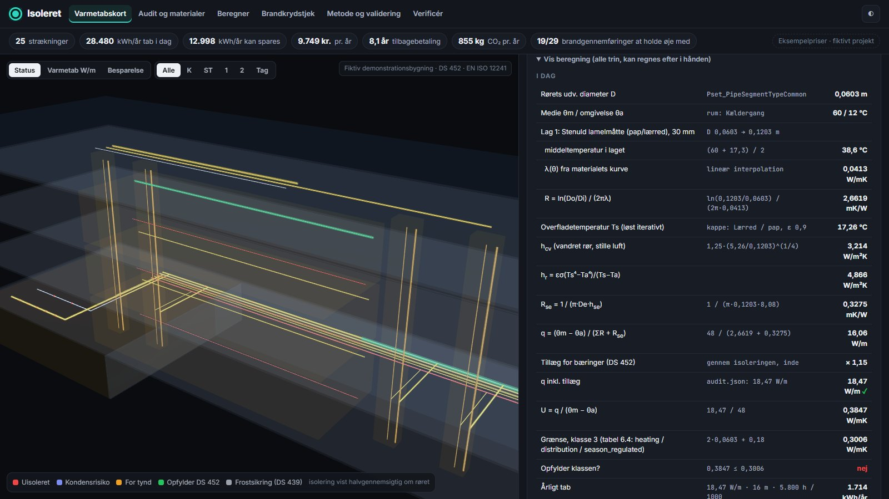
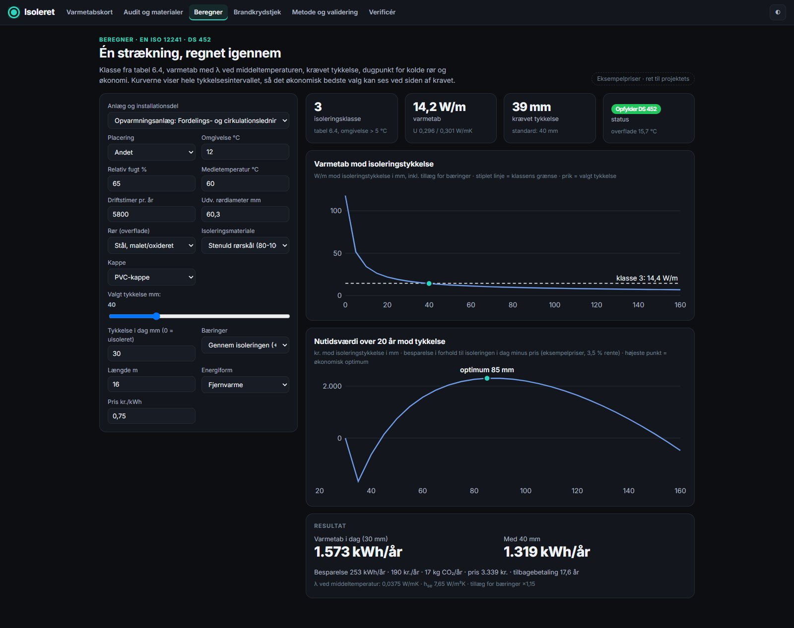
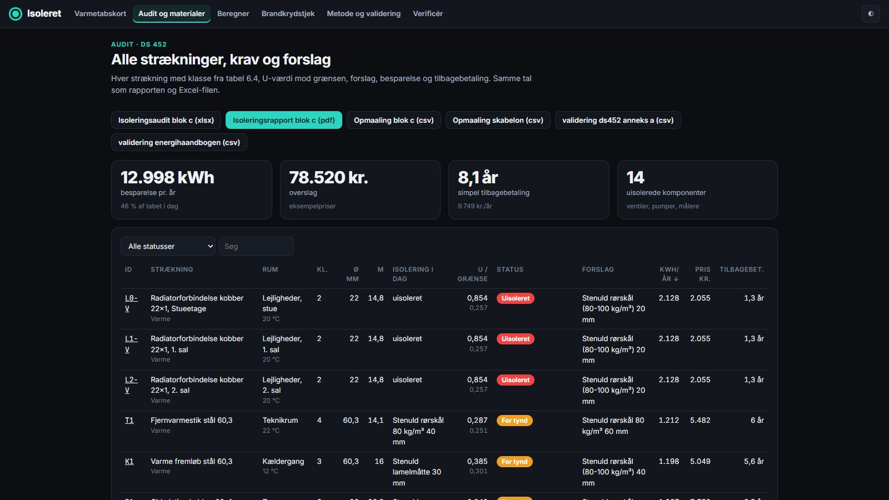
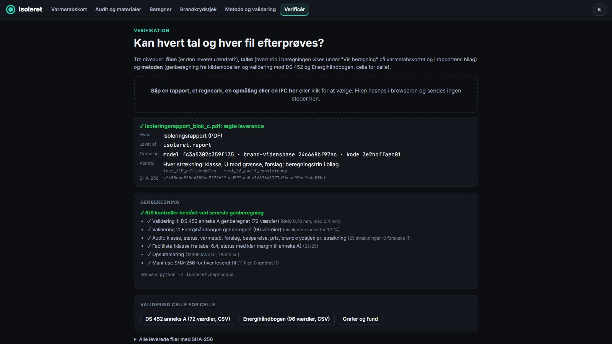
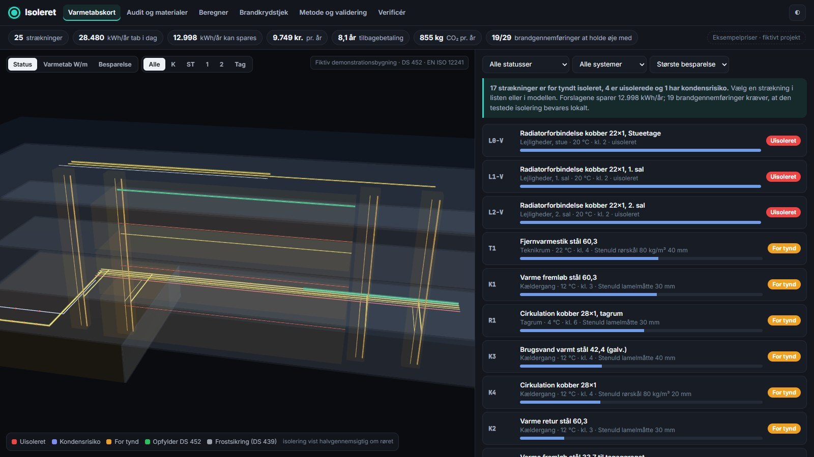

Isoleret audits a whole building from an IFC model or a site survey. Each run gets its class from table 6.4, its heat loss from EN ISO 12241, plus the missing thickness, condensation risk, savings and payback. Each fire-rated crossing is checked so an energy upgrade never quietly breaks a tested penetration seal.
* at example prices: 9,749 DKK/yr, 8.1-year simple payback; fictitious building.
Rendered frame by frame from the running app.
A penetration seal is classified only with the insulation it was tested with. An energy upgrade that changes the type, thickness or brand turns a tested seal into a deviation.
Isoleret checks each fire-rated crossing against the tested configurations (ETA-21/0110, ETA-20/1322) before and after the proposal. Where they conflict, it applies DS 452 table 6.2, which needs only half the thickness in a penetration: keep the tested insulation over the tested length and upgrade outside it.


DS 452 Annex A (tables A.1/A.2, 72 cells): RMS 0.76 mm, max 2.4 mm, with one stated design λ (the standard does not print it). Energihåndbogen (tables 11/12/15/16, 96 cells, λ 0.038 as stated): bare-pipe savings within 1.7 %.
Finding: the basement tables say half the loss is useful heat. The published numbers only reproduce without that rule.
A manual check for a person, and an automated one on every change.
SHA-256 manifest of every deliverable with producer, model and code version. Drag a file onto Verificér: hashed in the browser, never uploaded.
"Vis beregning" on every run: λ at the mean temperature, R per layer, hcv, hr, q, U against the class limit, each landing on the report's value ✓. The same steps are in the PDF appendix.
python -m isoleret.reproduce re-runs validation and audit from the source model: 6/6. Cell-by-cell CSVs of both validations.





check_pipe, ds452_class, audit_overview, list_runs, get_run, fire_crosscheck, materials, run_audit. Same engine, same numbers.
{"mcpServers": {"isoleret": {
"command": "python",
"args": ["<repo>/src/mcp_server.py"]}}}